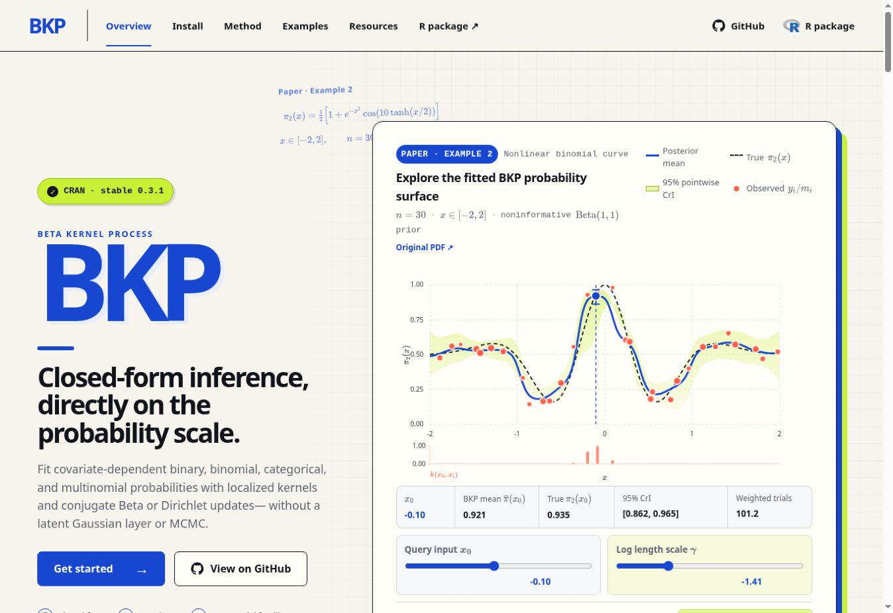

BKP: An R package for beta kernel process modeling
Probability modeling, uncertainty quantification, and an R implementation.
STATISTICS · METHODS · COMPUTATION
Postdoctoral Researcher in Statistics
East China Normal University · Shanghai
Simple models. Clear uncertainty.
Practical decisions.
Guided by KISS — Keep It Simple and Smart.
Research philosophy / KISS
A principle for doing research
Complex problems do not always require complex models.
I focus on statistical methods that are simple, transparent, computationally practical, and useful for real decisions.
For me, simplicity means keeping the essential structure of a problem while making the reasoning, uncertainty, and implementation clear.
Research areas
How can we learn from data while accounting for uncertainty?
How can statistical learning support better decisions?
How can statistical methods inform health and biomedical research?
Connected through statistical computing and practical software.
Selected work
Probability modeling, uncertainty quantification, and an R implementation.
Statistical learning for optimization under constraints.
Bayesian methodology for clinical trial design and dose optimization.

Software / BKP
BKP is an R package for beta kernel process modeling. Explore the software, its documentation, and the examples behind the method.